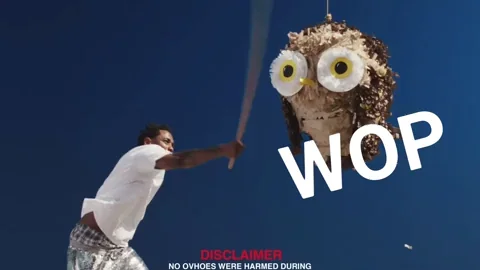

Lisa B

Welcome to Lisa B's Personal Profile Page
This page will give you an opportunity to learn more about Lisa through
her interest and experience
Biography
Lisa B is a motivated student who demonstrates strong work ethic and
creative ability. Seeking to apply graphic design skill and artistic drive
as a Summer Web Development Intern. Will leverage proven experience as a
competent designer to contribute to client's goals and needs. Lisa is
currently a student at the
TECH360 Summer Bootcamp at American on Tech. . I am a committed to lifelong learning and strive to make a positive
impact wherever I go.
Samples of My Work
Resume
Education
- Santa Monica High School, 4.0 GPA
- Expected Graduation June 2025
-
Relevant Coursework: Intro to Graphic Design, AP, Art, Yearbook,
Computer Application
-
Honors: Member of the National Honors and National Art Education
Association
- Clubs: Yearbook Club, Sanata Monica Newspaper, Spanish club
Relevant Experiences
- Intro to Graphic Design
- AP Art
- Yearbook
- Computer Applications
Skills
- Proficient in Photoshop and Adobe Creative Suite
- Basic knowledge in HTML
- Basic knowledge of Adobe Dreamweaver
- Great Photographer
-
Keen eye for aesthetics with good understanding of image gradients
- Imtermediate speaking level in Spanish
Honors and Awards
- Nominated for Macmillan Prize for Illustration in 2016
- Submitted artwork to Ocean Awareness Student Art Contest 2016
-
Came in 2nd place in the Applied Arts 2016 Student Award for
submitting graphic design work under the category of Advertising
Major Accomplishments
Yearbook Club
Yearbook Design Team Lead
-
Created a Yearbook logo designed to incorporate school mascot and
colors; opted to used coated papaer in 2016, which improved photo
quality and increased profits by 5%.
-
Arrange all club photos and pages to correspond to yearbook theme.
- Trained and supervised 2 sophomore students in graphic design.
Santa Monica Newspaper
Graphic Designer
-
Procured advertising for school paper, saving organization 25% in
costs.
-
Edited and curated photos used for school paper; increasing readership
by 15%
-
Custom design page layouts to fit articles, photos, and advertisement
into strict format.
-
Contributed to school's online publication by designing page layouts
to accommodate mobile screens.
Role Model

"Sometimes you gotta pop out and show n*****..." -
Kendrick Lamar